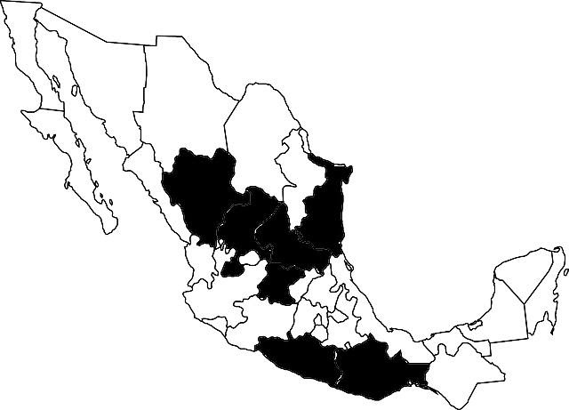
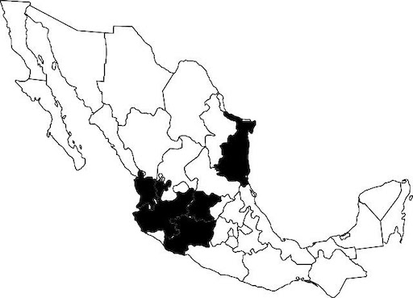
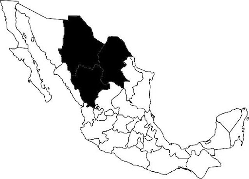
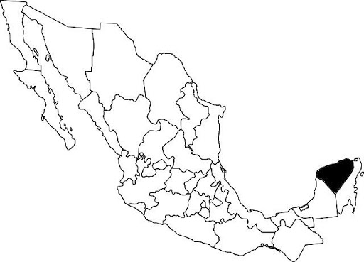
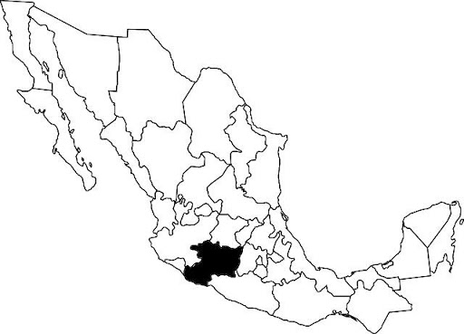
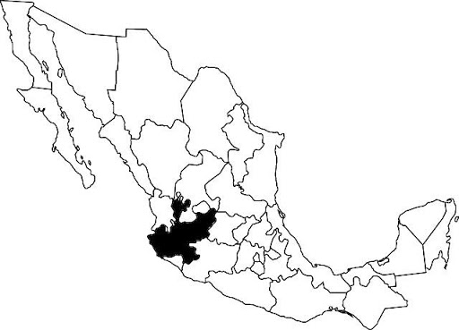
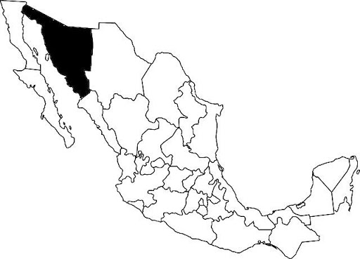
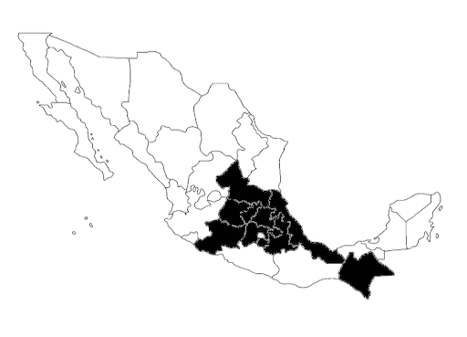

Bebida alcohólica artesanal y en su mayoría orgánica, resultante de la destilación del mosto y el bagazo fermentado de las cabezas o piñas de la planta del agave cocido, cuya peculiaridad es su sabor y aroma ahumado (obtenida de la cocción bajo tierra, con piedra volcánica). La graduación permitida por la norma que regula el mezcal está entre los 36 y 55 grados de alcohol. El Estado de la República Mexicana donde se producen la mayor cantidad de variedades de mezcal es Oaxaca, sin embargo; Durango, Guerrero, San Luis Potosí, Zacatecas, Guanajuato, Tamaulipas y Michoacán también se incluyen en la denominación de origen. Las variedades del agave con las que se puede producir mezcal son varias: espadín, tobalá, largo, tripón, barril, arroqueño, sierrudo, canastudo, tepextate, tobasiche, cirial, lumbre, coyote, jabalí, mexicano, espadín silvestre, lechuguilla y madrecuishe. Siendo angustifolia haw, salmiana, cenizo y cupreata variedades cultivables, mientras que las otras son variedades silvestres de poca producción, difíciles de conseguir, pero sobre todo de inigualables sabores y aromas.
Bebida alcohólica regional obtenida por la destilación de los mostos fermentados de las cabezas o piñas del agave cocido, elaborado única y exclusivamente con Agave Azúl o Tequilana Webwer. Comprende los territorios que llevan el nombre de la D.O. como lo es Tequila, además de Amatitlán, ciertos municipios de la zona de los altos en el estado de Jalisco (como Arandas) y en Nayarit en municipios como Itxlán del Rio. También en zonas específicas de Guanajuato, Michoacán y Tamaulipas. Hay tequilas blancos o plata (sin envejecimiento en barricas) Reposados (de 2 meses a un año en barricas). Añejo (más de 1 año en barrica). Extra Añejo (3 años en delante contenido en barricas).
Bebida ancestral elaborada a partir de la agaváceasilvestre Dasylirion (nombre coloquial sotol o sereque) que crece en el desierto de Chihuahua. Las tribus indígenas (Tarahumaras y Anasazis) hacían uso de ella en ritos y celebraciones desde hace más de 3.000 años. La edad media de maduración de la planta son 15 años y su rendimiento es de un litro de mieles por planta. Una vez destilado, su graduación alcohólica está comprendida entre 35 y 55 grados. Los estados que comprende se D.O. son: Chihuahua, Coahuila y Durango.
Destilado de origen maya, de sabor y golpe fuertes. Se bebe a lo largo de la península de Yucatán y es elaborada a partir de la miel maya y el polen de la flor de Ixtabentun. Es un producto del mestizaje por lo que tiene como base el anís o el ron.
De origen Purépecha, es un aguardiente de caña de azúcar que crece a más de 1500 mts sobre el nivel del mar. Esto, junto al uso exclusivo de agua de manantiales para su elaboración, hacen que se trate de un producto especial. Se produce en 15 municipios del estado de Michoacán y su contenido alcohólico va de 35 a 55 % de alcohol. Su proceso de elaboración es similar al del Ron y generalmente es añejado en barrica de madera de encino.
Bebida alcohólica del Maguey Lechuguilla, cuyas variedades son agave maximilana, inaequidens y valenciana, las cuales se producen en la región occidental de Jalisco. Sus hojas con rígidas y afiladas y florece una única vez en la vida. Se destila en las zonas serranas, donde anteriormente se vendía de manera clandestina. Su producción actual es de 100 000 litros anuales. Actualmente se encuentra luchando por su denominación de origen.
Bebida elaborada con agave angustifolia que crece en la región de la sierra sonorense (sierra madre occidental). Anteriormente se consideraba una bebida clandestina debido a su proceso de elaboración. Su producción es similar a la del mezcal y es una bebida que actualmente también cuenta con su denominación de origen. Muy apreciada por los habitantes del estado de Sonora y de gran arraigo en sus costumbres de degustación masiva para celebraciones locales.
El pulque es el antecesor del mezcal y, aunque proviene de la misma planta (el agave), el pulque se elabora a través de fermentación, no utiliza destilación. Esta bebida, muy apreciada en el imperio Mexica, se obtiene de las pencas del maguey salmiana cuando la planta está madura. Para ello se le arranca la yema o corazón y sus paredes se raspan hasta lograr una cavidad, de la que unos días después manará el aguamiel de las pencas, durante un período que va de tres a seis meses. En el estado de Chiapas se destila el fermentado del aguamiel consiguiendo un destilado que conserva los matices del pulque, pero con una mayor graduación y sin tanta untuosidad.
